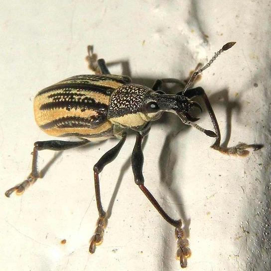

Return to Texas Entomology - Compiled by Mike Quinn
|
 |
Range:
This weevil is native to the Caribbean. It was accidentally introduced and became established in Florida (1964), Rio Grande Valley (2000), Southern California (2005) and now apparently in Houston (July 2009).
Quarantine: Texas Dept. Agriculture placed this species under quarantine in 2001 due to the population in south Texas.Notching along the margins of young leaves is a telltale symptom of the presence of Citrus Root Weevil adults, or other related root weevils.
The larvae of D. abbreviatus are found in the soil where they feed on the roots of the host. They will often girdle the taproot, impeding the ability of the plant to take up water and nutrients resulting in plant mortality. A single larva can kill young hosts while several larvae can cause serious decline of older, established hosts. Because larvae are below ground, it is difficult to detect them before decline of above ground potions of the host is observed. - Texas Dept. Agriculture
A single D. abbreviatus female can lay up to 5,000 eggs in her three to four month long life. - Univ. Florida
Poster on research and damage caused by the CRW in Rio Grande Valley - TAMU-Kingsville Citrus Center
Extensive life history info - Univ. Florida
Citrus Root Weevil Short Course Porceedings - Univ. Florida
Excellent flier on how to detect adult feeding damage - UC, Davis
Taxonomy:
The Citrus Root Weevil is the only member of its genus in the U.S., however there are at least 16 additional species within the genus in the Caribbean.
References:
Arnett, R.H., Jr., M.C. Thomas, P. E. Skelley & J.H. Frank. (editors). 2002. American Beetles, Volume II: Polyphaga: Scarabaeoidea through Curculionoidea. CRC Press LLC, Boca Raton, FL. xiv + 861 pp.
Woodruff, R. E. 1964. A Puerto Rican weevil new to the United States (Coleoptera: Curculionidae). Fla. Dep. Agric. Div. Plant Ind. Entomol. Circ. 30: 1-2.
Woodruff, R.E. 1968. The present status of a West Indian (Diaprepes abbreviata (L.)) in Florida (Coleoptera: Curculionidae). Florida Department of Agriculture and Consumer Services, Division of Plant Industry Entomology Circular (Full PDF).01 Aug 2009 © Mike Quinn / entomike@gmail.com / Texas Entomology / Texas Beetle Information